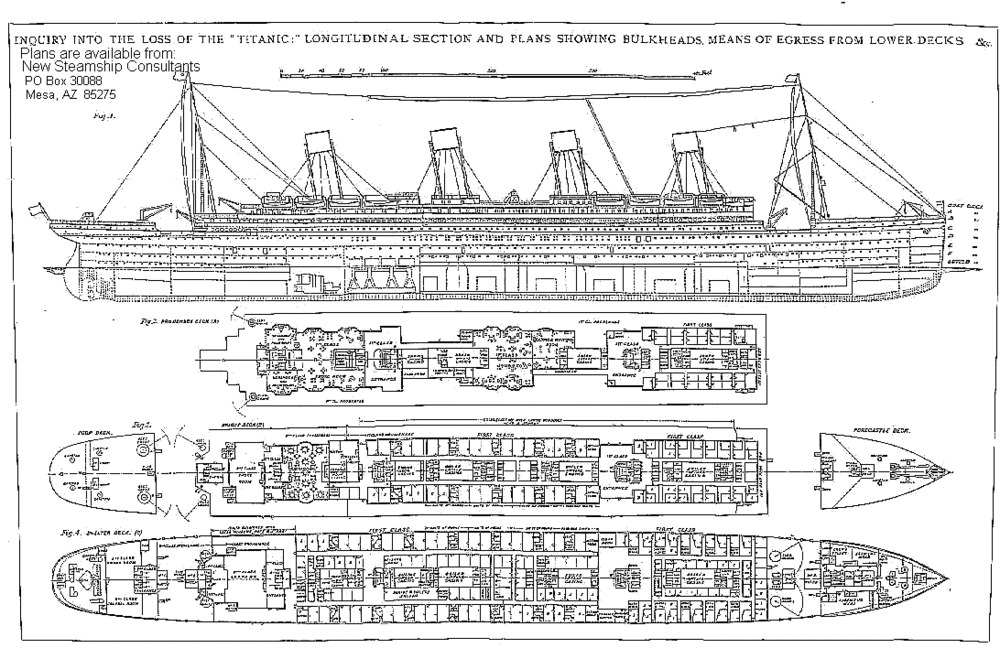

The Titanic was famed across the world. It was the pinnacle of scientific achievement. It was splendor, wealth and fame. But then, just like that, it was all over. For years, people have wondered why the ship sunk. While we may never know the answer, we can analyze different factors to give us a unique perspective on the “Unsinkable” ocean liner. In this essay, we will look at how the Titanic was born, How it sank and factors which contributed to vessel capsizing.
It’s 1910, and you’re an executive in White Star Line. The Cunard brand of ships has taken the seafaring market by storm with the Luthisiana and Marithuania, the fastest ships on the earth. Your company needs a captivating ship if it wants any chance competing against these ships. Fortunately, you and your fellow execs have at trick up your(collective) sleeves.This trick was the Titanic. The Titanic was wider than a four lane highway, and longer than four city blocks. At the time of making, it was the largest ship ever built. According to “Titanic Disaster”, by Sonia Benson, The ship cost 400 million in today’s US dollars. The ship had four visible smokestacks, but only three were operational(the fourth one was for show). This vessel was made to impress. And impress it did. The CEO of White Star Line deemed the liner “Practically unsinkable”. Unfortunately for him, many people forgot the "practically" part.
It’s the Night of April 14, 1915. Aboard the Titanic, lookout Frederick Fleet is looking for anything that could impede the speeding vessel on route to New York. He’s mainly watching for icebergs, big or small. Suddenly, he sees something. It’s an iceberg! Not only that, it’s a big one and a close one. He immediately springs into action. DRIIING!!! He rings the warning bell 3 times. The officers order the engines into reverse. It looks like the ship and the iceberg might not collide. But unfortunately, It is too late. As the iceberg hits the ocean liner, there is a scrape, but not many passengers feel it. In the lower decks, however, it is a different story. The engine rooms begin flooding, among other rooms. The hull of the ship has 16 sections, each with doors, so flooding can be minimized. As the sections flooded,the bridge officer of the ship ordered to close all the doors. Unfortunately, this order came too late. The Captain knew the Titanic was doomed, so he ordered to release the lifeboats. Unfortunately, there were only 20 lifeboats on the ship, and some people would not be able to make it. As the lifeboats launch, everyone on the ship is ordered to get in a life vest. Once all of the lifeboats are detached, the captain declares “every man for himself”. The captain, as is tradition will be going down with the ship. 1,500 people remained on the ship. Most did not make it.
As the sinking of the Titanic was researched further, a couple of reasons for the infamous sinking have come to light. For one, the lifeboats were used improperly. All but 2 of the lifeboats were undermanned, and the two that had enough people were amazingly overmanned. If lifeboats were filled to capacity, many more people would have been saved. Another reason relating to the tragedy was the fact that third class citizens did not get lifeboat training so they could not properly operate lifeboats. One more reason is that there were not enough lifeboats on the titanic. The lifeboats could only hold up to 1,178 people, but there were many more than that on the Titanic. This may be because of the safety measures that were taken, like the 16-section hull, and the arrogance that came with “the most advanced ship ever”. Maybe the makers of the Titanic neglected lifeboats because they thought the vessel was “unsinkable” and therefore did not need the basic safety precautions on regular ships of the day. Another more specific reason is that the warning of ice came too late. As I described in the previous paragraph, when Frederick Fleet saw the iceberg, it was big and close. If he had noticed the iceberg earlier, the ship may have had time to avoid the iceberg.
The Titanic was a great tragedy. Even after the ship was hailed as “unsinkable”, shrouded with admiration, worked on for years, in the end, it still went down into the depths of the Atlantic. As we learned why the Titanic was famed, how the ship capsized, and why it capsized, we can continue to understand how not to make such a mistake again. And when we understand, we can make sure a disaster of this scale never happens again.